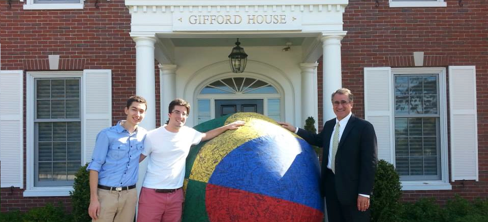
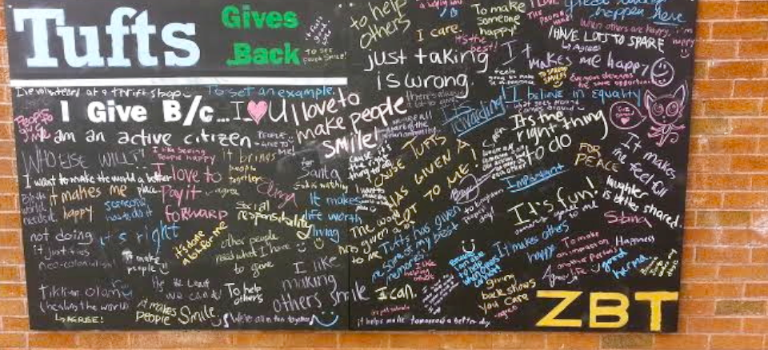
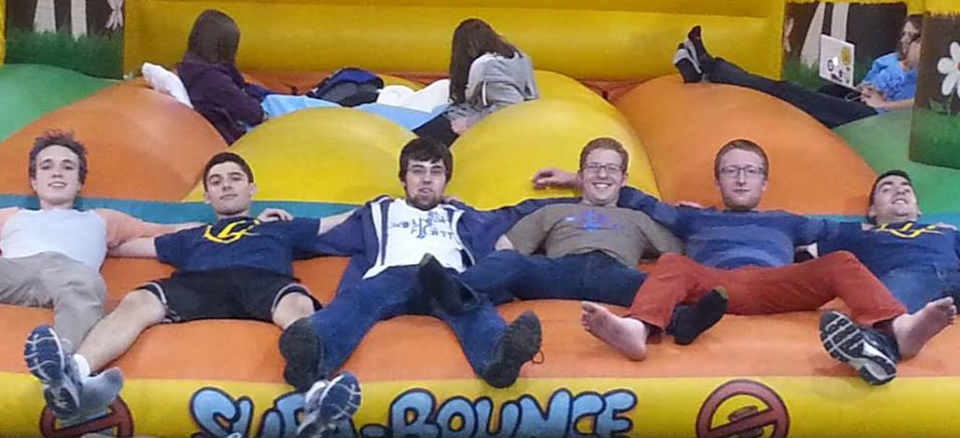
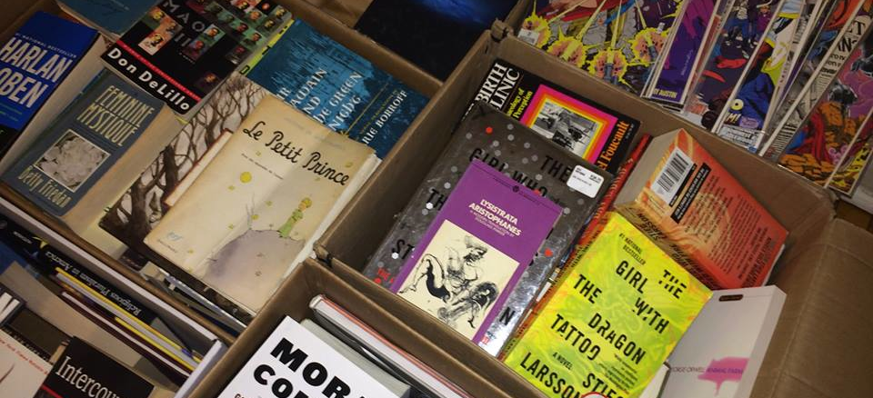
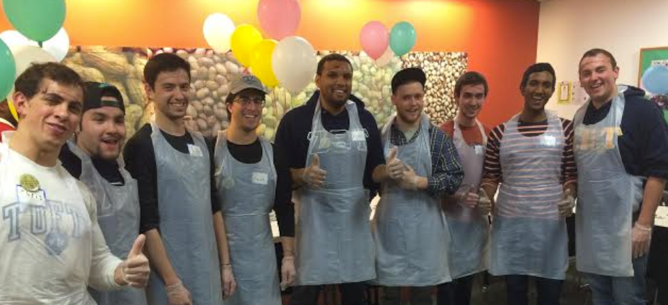

Some fun facts about Rayn. He is a cool dude. He travels a lot. He studies Urban and Environmental Planning. Etc.
A Powerhouse of Excellence
The Omicon Chapter of Zeta Beta Tau was founded in 1987 at Tufts University. In the small room of 102 Hill Hall, our first four founders met to plan out the future of the chapter. Since that point, ZBT Omicron has enjoyed over 25 years of great memories, philanthropic efforts and social events at Tufts University.
Since its founding, ZBT Omicron has seen success, a success that has continued over the past few years. We have fundraised tens of thousands of dollars for the Boston Children's Hospital, received national awards and accolades like Most Improved ZBT Chapter, and maintain our commitment to being Tufts' only non-pledging fraternity.
We, the members of Zeta Beta Tau fraternity, believe that the development of the individual as a responsible, mature member of society is the primary goal of the university today. We believe that fraternity offers to the university community a unique, desirable and successful means of achieving this goal. In fulfilling the purposes of fraternity, we dedicate ourselves to the principles of Intellectual Awareness, Social Responsibility, Integrity, and Brotherly Love.
Get On The Ball is ZBT Omicron's weeklong fundraiser for the Boston Children's Hospital. During the week, we raise money and awareness for the Hospital, rolling a 6x6 ball around campus. We get the entire Tufts and Medford/Somerville community involved, taking all contributions from monetary donations to just signing the ball.
Last year, in 2013 we raised $5500 during our weeklong fundraiser, cosponsoring with countless businesses (JP Licks, Kickass Cupcakes) and working with several on-campus groups (Alpha Omicron Pi, Spirit of Color, sQ!, Amalgamates, Jackson Jills, BEATs, S-Factor and more).

Be The Match
In April 2014, ZBT Omicron brought Be The Match to Tufts University. In cosponsorship with the Tufts Association of Southeast Asians and the Tufts Psychology Department, ZBT helped enter over fifty members of the Tufts community into the bone marrow registry. Those who entered the registry potentially helped the lives of many.
Bringing Be the Match to the Tufts Campus was a part of Tufts Gives Back, the one day of the year dedicated to giving back to the community. Tufts Gives Back was created by ZBT, and 2014 was its inaugural year.

Relay for Life
Every year, brothers of ZBT Omicron participate in Relay for Life – an up-all-night fight against cancer, and a fundraiser for cancer research. In 2013, we fundraised the most for any fraternity, and we received the bronze medal of honor in recognition for our efforts. In 2014, we placed second in the inter-Greek fundraising competition.
Check back soon for more information about how to donate to and join our Spring 2015 Relay for Life team.

More Than Words
In April 2014, ZBT Omicron partnered with More Than Words. More Than Words is bookstore that employs people from disadvantaged backgrounds and gives them interview training so that they can find jobs elsewhere. Over the course of a few days, we sold and collected books for More Than Words, donating all profits and books made to them.
Bringing More Than Words to the Tufts Campus was a part of Tufts Gives Back, the one day of the year dedicated to giving back to the community. Tufts Gives Back was created by ZBT, and 2014 was its inaugural year.

Community Servings
Every year, brothers of ZBT Omicron participate in Relay for Life – an up-all-night fight against cancer, and a fundraiser for cancer research. In 2013, we fundraised the most for any fraternity, and we received the bronze medal of honor in recognition for our efforts. In 2014, we placed second in the inter-Greek fundraising competition.
Check back soon for more information about how to donate to and join our Spring 2015 Relay for Life team.

Big Brothers, Big Sisters
In April 2014, ZBT Omicron brought Be The Match to Tufts University. In cosponsorship with the Tufts Association of Southeast Asians and the Tufts Psychology Department, ZBT helped enter over fifty members of the Tufts community into the bone marrow registry.
Bringing Be the Match to the Tufts Campus was a part of Tufts Gives Back, the one day of the year dedicated to giving back to the community. Tufts Gives Back was created by ZBT, and 2014 was its inaugural year.
Committed to Social Responsibility
Spring Rush 2015
This year, our Spring Rush events will be as follows:
1. Tuesday, January 20th – 9:00pm
Come join the brothers of Zeta Beta Tau for a night of Super Smash Bros. and catered Chipotle! Play as your favorite character as you make new friends, enjoy burriots and get to know the brothers. See you at the house (126 Packard Ave.) at 9pm!
2. Thursday, January 22nd – 6:30pm
Enjoy a night of bowling, on us! Meet up at the house (126 Packard Ave.) a bit before 6:30, and head over to Some Bowling Place with us for a night you're sure to remember. We will also be providing pizza and drinks. Looking forward to seeing you there!
3. Saturday, January 24th – 6:30pm
Dine out with us at one of the best hot pot places in Porter Square! We will be meeting up at the house (126 Packard Ave.), and we'll then all head over to Some Asian Food Place together for dinner.
For more information or if you have any questions, please contact Ryan Hastings-Echo.
Brothers
Leadership
Matthew Felsenfeld, President
Joseph Cirone, Vice President
Ryan Hastings-Echo, Brotherhood Development Director